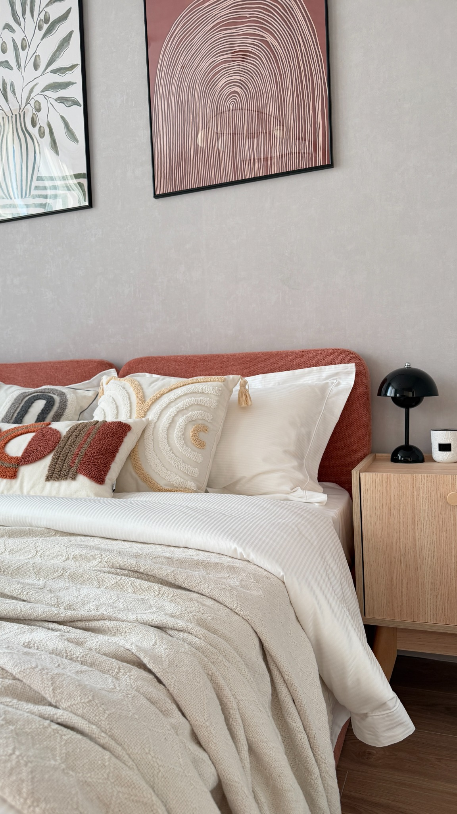

Купить из подборок
Собираем интересные находки для дома, ремонта и обустройства. Выбирайте понравившиеся товары и заказывайте их у нас.
Посмотреть направления ↗Красивые, функциональные и интересные вещи для дома — напрямую из Китая.
Выбирайте товары из наших подборок или приходите со своим запросом. Пришлите фотографию или ссылку на понравившуюся вещь — мы попробуем найти её в Китае и организовать покупку.

Для большого обновления дома
и маленькой детали, которая меняет всё.
Собираем интересные находки для дома, ремонта и обустройства. Выбирайте понравившиеся товары и заказывайте их у нас.
Посмотреть направления ↗Понравилась мебель, светильник или необычная вещь из интернета? Пришлите фото или ссылку. Попробуем найти такой товар или максимально похожий у китайских поставщиков.
Отправить фотографию ↗Есть идея, но пока нет конкретной модели? Расскажите, что ищете. Подберём варианты по внешнему виду, характеристикам и вашему бюджету.
Рассказать об идее ↗Свет, мебель и декор — наши основные направления. Если ищете что-то другое, просто напишите.

Люстры, бра и напольные светильники

Форма, удобство и ваши идеи

Декор и маленькие акценты
Подборки товаров с ценами скоро появятся здесь. Пока можно прислать свой запрос — начнём с того, что нравится именно вам.
Фотографии — для вдохновения, не каталог товаров.
Согласовываем все условия до покупки, чтобы вы понимали, что заказываете.
Вы присылаете фото или ссылку на нужную вещь либо выбираете товар из наших подборок.
Проверяем возможность заказа, характеристики, стоимость и ориентировочные сроки. Согласовываем условия с вами.
После согласования вы переводите оплату нам на карту. Реквизиты передаём лично.
Оформляем покупку у китайского продавца и организуем доставку в Москву.
После прибытия в Москву согласовываем получение или дальнейшую отправку в ваш город.
Средний срок доставки из Китая до Москвы
После прибытия в Москву заказ можно получить или отправить в ваш город. Срок дальнейшей доставки зависит от региона и выбранной транспортной компании.
Стоимость товара, доставки и условия покупки согласовываем с вами до выкупа.
Сроки ориентировочные и могут меняться в зависимости от наличия товара, работы продавца и логистики.
Мы заинтересованы в том, чтобы вы остались довольны покупкой. Напишите нам — разберёмся в ситуации и предложим решение.
Тоже напишите нам. Обсудим возможные варианты возврата или обмена в зависимости от товара и условий поставщика. Условия для конкретного заказа уточняем до покупки.
Пришлите фото или ссылку, желаемый бюджет и количество. Уточним характеристики, стоимость и доставку и согласуем условия с вами до выкупа.
Можно написать Луизе или Алексею — вместе мы занимаемся поиском и заказами из Китая.
Подбор товаров, находки для дома
и сотрудничество
Заказы и организация
покупки
Чтобы мы быстрее нашли нужное, сразу отправьте фотографию или ссылку на товар, желаемый бюджет и количество.
Отправить запрос в Telegram ↗